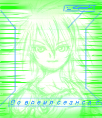

エクリプス・フェイズ リプレイ１－１
エクリプス・フェイズ リプレイ１ 紅き氷の溶ける時
２０１２年３月２５日 オフラインセッション
ある週末。某所の公民館に、ＧＭの呼びかけでプレイヤーが集まった。 和訳版の発売が決まっている最新ＳＦ・ＴＲＰＧエクリプス・フェイズを体験版ルールでプレイするのだ。
ＧＭ・シナリオ作成：清水三毛
【プレイヤーキャラクター紹介】
いずれもデータはサンプルＰＣを使用。
- ハルノブ
-
- 説明
-
知性化タコの盗掘屋。宇宙船の残骸などを漁って生計を立てている。日本語を話し、水墨画と美少女フィギュア収集が趣味。器用で色々できるが、回避は苦手。エゴは男性らしい。好奇心旺盛。
- オレーシャ
-
- 説明
-
外見は武骨な戦闘円盤。星間軍事企業ダイレクト・アクション社の宇宙傭兵。エゴは若い女性で、戦闘大好き。レールガンやマシンガンで重武装している。義体はリーパー型。（サプリメント「サンワード」のサンプルＰＣより）
ＧＭ ： 世界背景を説明するよ。
エクリプス・フェイズの舞台は、未来の太陽系だ。
各惑星に人類のコロニーがある時代で、サイバー技術やナノテクの進歩も著しい。ほとんどの人は脳内にコンピュータを埋め込み、遺伝子調整やサイバー化は当たり前だし、お金さえあれば、 魂（エゴ） をデジタルデータ化し、 義体（モーフ） を自由に乗り換えることができる。これにより、人は実質的に死ななくなった。知性化された動物や、データだけの電子生命体などもいる。
だが、１０年前、軍用人工知能 TITANs（ティターンズ） が自我に目覚め、人類と機械の戦争が勃発。総人口の９割が失われ、人類は絶滅の危機に瀕している。核、自律マシン兵器やナノテク兵器によって地球は壊滅し、惑星連合によって封鎖されてしまった。今また、人類が絶滅しかねないリスクの芽があれば、早めに摘み取らねばならない。そういうわけで君たちＰＣは、人類絶滅リスク「X-リスク」を消去するため、 秘密組織ファイアウォール の工作員をやっている。
大まかにいって、太陽から火星までの内惑星圏では巨大星間企業（ハイパーコープ）勢力が強く、天王星などの外惑星圏では無政府主義者などの極端な勢力がうごめいているイメージかな。
ＧＭ ： 今回は私のオリジナルシナリオで、火星が舞台だ。配ったサンプルキャラクターから、好きなものを選んでください。戦闘シーンは、あります。
プレイヤー１ ： 知性化タコかなあ。「メルクリウスの盗掘屋」。
プレイヤー２ ： 戦闘系キャラをやるかな。スカムの宇宙海賊姉さん、ウルティメットの傭兵、ダイレクト・アクション社の傭兵あたりがガチ戦闘系ですか。ダイレクト・アクションにしましょうか。軍事企業の傭兵社員って分かりやすい。
ＧＭ ： サンプルＰＣを使うけど、数値的に影響のない趣味のあたりは、お好みで変えてもいいよ。
プレイヤー１ ： じゃあ、宇宙船の興味や水墨画に加えて、人型のフィギュアを趣味で集めていることにしよう。「骨のある種属でも、少女だけは鑑賞に値するのだ」
ＧＭ ： なぜだ（笑）
プレイヤー１ ： TITANs（ティターンズ）に滅ぼされた地球の遺跡を漁っているうちに、美少女フィギュアにハマってしまったのだ。そして故郷の海でいつの日か泳ぎたい、と思っているタコなのだ。
ＧＭ ： タコなのに人間の少女フィギュアに萌えるとは、純粋に変態だな……。名前は母国語から決めていいよ。タコは日本語かな。
プレイヤー２ ： こっちのサンプルＰＣ、母国語がロシア語で、命名が難しいですね。戦闘機メーカーの名前か、武装神姫あたりからとってみますか。
ＧＭ ： 性別も自由に設定していい。エクリプス・フェイズでは、エゴの性別とモーフの性別は別々でもいいし、性的な嗜好も人間の男女だけでなく知性化動物やエイリアンも含められるから、複雑な組み合わせが考えられるぞ。
プレイヤー１ ： ガンダムのボールみたいなリーパーが、メッシュ通信時のアイコンでは初音ミクみたいな美少女グラフィックということもありうるわけか……。
ＧＭ ： 先日のエクリプス・フェイズ体験会では、インフォモーフ（電子生命体）の外見をミク風に設定しているプレイヤーがいたなあ。
プレイヤー１ ： ぱねぇ。浮世絵師からとって、名前はハルノブにしよう。「僕は芸術家だ。まだ見ぬ文化財を保護するため、冒険するのだ（キリッ）」ところでこのタコさん、武装のデータは、ピストルとしか書いてないな。
ＧＭ ： （原書ルールブックを引用しつつ）ヘビーピストルということにしよう。あとそのタコさん、超テルミット爆薬があるから、エクスサージェント・ウィルスに汚染された敵を焼却したり、最悪の場合は自爆したりするのにも便利だ。
プレイヤー２ ： 名前は、オレーシャ・ザラフィアンス。エゴは戦闘狂というかんじの女性で。精神年齢は二十代前半ぐらいです。「ハハッ、戦闘は楽しいネェ」
ＧＭ ： 危ないお姉さんだな。
プレイヤー２ ： レールガンとかミサイルとか、武器のかたまりですよ。
プレイヤー１ ： もう既に我々は知り合いなんだろうか。
ＧＭ ： 何回か「ファイアウォール」の秘密作戦をこなしてきた、としておこう。
このあと軽く模擬戦闘をしてから、セッションを開始した。
シーン１ 秘密の依頼
ＧＭ ： 自己紹介をお願いします。
ハルノブ ： 「メルクリウスの盗掘屋」知性化タコのハルノブだ。冒険心あふれる宇宙船サルベージ業者で、文化財保護のためにフィギュア集めもしているぞ。精神的には２０歳ぐらいで。
オレーシャ ： ダイレクト・アクション社の宇宙傭兵、オレーシャです。女性、２６歳。「スリルシーカー」「重商主義」の特徴をもっている。戦闘狂で、報酬をもらって戦うのが好き。ハイパーコープの社員ですね。義体はリーパー。
ＧＭ ： 君たちは目を覚ました。医療ポッドの中にいるようだ。
ハルノブ ： おや？なぜこんなところで？
ＧＭ ： 君らの視界に、ウィンドウがポップアップして開く。女性の音声データが流れる。「前のあなた方は失敗したようね」ぶっちゃけ、前の君たちは死亡したようだ。
ハルノブ ： やっぱりか。定番だな。
ＧＭ ： 幼形成熟義体っぽい少女がウィンドウで喋っている。青い髪の女の子だが、どこか整いすぎて不自然な外見だ。少女はファイアウォールの連絡役（プロキシ）、コードネームは仮にＧとでもしておこう。君たちはファイアウォールに属する工作員（センティネル）、彼女のことは何も知らない。ファイアウォール構成員は互いを知らず、組織の全貌も一切分からない。ただ、X-リスクに結びつきそうなウィルス兵器だのTITANsの遺産などに関する情報が入ると、プロキシから君たちセンティネルに指令が下る。
ハルノブ ： なんか作戦を任されて、失敗しちゃったわけだな。
ＧＭ ： いくらでも精神のバックアップをとっておける時代だからね。君たちの脳には 「スタック」という大脳皮質記録装置 が埋め込まれていて、そこに記憶がセーブされている。
さて、君らの眼内映像に座標データが表示される。いま居る場所は、火星の義体クリニックのようだ。
「いま、バックアップからあなた方を起動したところです。残念だけど、完全な記憶はサルベージできなかった」Ｇは事務的に言って、画像をメッシュ経由で君らに送信してきた。
「前任の」オレーシャとハルノブが最期に見たものは、衛星軌道上の宇宙港ドックだった。
小型シャトルのものらしいコクピットの主観映像だ。 そのディスプレイの一つに、古びたドックが映し出されている。
「あれが目標の宇宙港だな。これより潜入し、捜査する。データ送信は１分後に終了」
ホロ・ディスプレイに、接近するための軌道要素が予測進路として立体表示され、ほの青く光っている。 機首のスラスタかららしい逆噴射のプラズマが、キャノピーの外で輝く。 順調だ。相対速度差は徐々に小さく……
突如、警報。 閃光が走り、意識と記録は途絶えた。
ハルノブ ： 潜入が始まってすらいないじゃないかー！
オレーシャ ： 「２人だけで潜入捜査なんて、そもそも無理があったんじゃないか？」
ＧＭ ： しかしダイレクト・アクション社の傭兵ということは会社員だよな。会社と関係ないミッションで死んだ場合、上司への報告はどうするんだろうな。
オレーシャ ： 適当な理由で有給とって、バックアップで復活して何気なく出勤するのでは。私物の義体なら問題ないでしょ。「なんかお前、義体キレイになってね？」 「いやあ。ちょっと休暇中に死んじゃいまして。てへぺろ」 みたいな。
ＧＭ ： ま、まあ。ＰＭＣだし、休暇中に私用で戦うこともあるんだろうね。
ＧＭ ／ Ｇ ： 「残念ながら迎撃システムを突破できなかったようね」
オレーシャ ： 「船ごと墜ちたか。楽しいネェ」
ＧＭ ／ Ｇ ： 「繰り返しになりますが……一ヶ月ほど前、火星の北極冠付近にある開拓コロニー＜Ｄ１９２＞が消息を絶ちました。この地域でハイパーコープによる秘密の実験があったという情報もあり、 X-リスクが存在する可能性があります。まだ正確な座標すらわかっていませんが、原因をつきとめ、可能ならば、解決してください」 これが今回のシナリオ目標です。
ハルノブ ： その前に、いまの火星はどんなかんじなのかな。
ＧＭ ： サプリ「サンワード」に書かれているが、独自解釈もまじえて。まず極冠は、氷に覆われていて、まだまだ未開の地ということにしておこう。火星は、現在テラフォーミング進行中。ニュー上海をはじめとして巨大なドーム都市もあるけど、まだ大気も薄くて外での行動には専用のモーフが必要。田舎にいくと西部劇の開拓時代のような環境だ。そういう辺境では、安物の合成義体に入った人々、バルスーム人が開拓に従事している。
太陽系最大の火山、オリンポスは地表からの高さが27，000メートルもある。山頂のカルデラには軌道エレベータが建設されており、そこから宇宙に行くことも出来る。
ハルノブ ： 「最期の映像は衛星軌道上だったけど、調査の対象は地上の集落か。話がつながらないな」
ＧＭ ： 調査対象付近の集落で、バルスーム人（開拓民）に聞き込みをするか、荒野を放浪しているテクノ漂泊民に話を聞くか、ニュー上海みたいな大都市で情報を集めるか、といった選択肢がある。移動手段としてはエアカーもあるし、磁気浮上特急もある。そんなに大変ではない、としておこう。
ハルノブ ： 「まず、人が集まりそうなニュー上海あたりから調べますか」
オレーシャ ： 「なんだい、そこで銃をぶっぱなしていいんだね？」
ハルノブ ： いやいやいや！
ＧＭ ： ニュー上海は、マリネリス大峡谷の東方にあるドーム都市だ。その前に、「ネットワーキング：自治主義者」技能をもっている人は判定をしてもらえるかな。
判定は、％ダイスをふり、判定値以下の数字が出れば成功。 例えば、ある技能の値が６０の人は、修正がなければ６０％の確率で成功する。わかりやすいね。 出目が３０、判定値を下回るとエクセレント成功といって、より良い結果となる。
ゾロ目での成功は決定的な成功、ゾロ目の失敗は決定的な失敗。 あと、 ００ は常に決定的成功で、 ９９ は常に決定的失敗となる。
ちなみに、判定する人を「チームワーク」で応援すると、協力者１名につき＋１０％される。 今日はプレイヤーが２人しかいないけど、もっといれば最大＋３０％まで加算できる。
ハルノブ ： 僕はオレーシャを応援しよう。「まず近場から調べたらどうですか」
オレーシャ ： 「自治主義者」技能は３５％だけど、「チームワーク」で応援をいただいたので４５％になった。（１０面体サイコロを２個転がす）……１０だ。応援のおかげでエクセレント成功。
ＧＭ
：
この場所からそう遠くない場所に、移動中のテクノ漂泊民がいるという情報を得た。そいつらがメッシュ（ネット）で噂を流している。
>>消息を絶った極冠の村、ヤバイ病気が流行ったっていう通信ログがあるらしいぞ
>>ソースうｐよろ
>>現地で確認できないか？
>>ジャミングかけられてるらしい
>>まさかクソ企業どもがパンドラ・ゲートから何か持ち込んだとか？
>>オワタ
>>人類オワタｗｗｗ
ハルノブ ： じゃあ地上バギーでも飛ばして、テクノ漂泊民に会いに行ってみる。
シーン２ ある漂泊民氏族との遭遇
ランド・バギーに乗って、オレーシャとハルノブは火星の平原を行く。
ＧＭ ： 赤い荒野に土煙をあげているトレーラーの車列が見えてきた。漂泊民の一氏族らしい。安っぽいロボットのような合成義体（シンセ・モーフ）を着た労働者っぽい連中や、高空から偵察しているらしいトンボ型の義体も見える。トンボ義体は１メートル以上もある大きな航空モーフで、腹部にはスナイパーライフルを装備している。変なことをすれば上空から狙撃されるかもしれない。
ＧＭ ／ 漂泊民 ： 「話があるそうだが、タコはともかくリーパー型とはな。まずは武装を解除してもらおう」
オレーシャ ： 「こんなのァ付け爪みたいなもんじゃないか」ガシャガシャとパージ。
ＧＭ ： 機械の義体っぽくて良い演出だな、＋１０％、社交で判定していい。
オレーシャ ： （ダイスを転がして）あれっ、失敗した。
ＧＭ ／ 漂泊民 ： 「あー、よそ者はお断りだ、さっさとどっか行け」
ハルノブ ： ここは僕の「水墨画：５０％」で！
ＧＭ ： おい、それでどうやって交渉しようというんだ。
ハルノブ ： 火星の大地に、自らの墨でダイナミックなアートを描くのですよ。ラブアンドピース、みたいな絵を！
ＧＭ ： ううーーん。じゃあ－１０％で判定。
オレーシャ ： 「何やってんだい、このタコノブは？」応援しないね。
ハルノブ ： あっ６０、失敗しました。「伝説のウキヨエを描いてみたのにっ。駄目でした、ホクサイ＝サン……！」
ＧＭ ／ 漂泊民 ： 君たちは追い払われた。
ハルノブ ： いや待ってください、「手先：４５％」で！八本の脚を使って手品で和ませよう！「いつもより多めに回しているのだ！」
ＧＭ ： えー、なんだそれ。じゃあ、－１０％で判定してくれ。
ハルノブ ： ９がでた！成功！神のようなジャグリングです。
ＧＭ ／ 漂泊民 ： 「あっ、旅芸人だったのか。みんな、面白いタコがいるぞ、来てみろよ」と、合成義体の人々が集まってくる。「何か話を聞きたいとか？」
漂泊民に話を聞くと、 北極の開拓村で疫病が流行したという噂があることがわかった。
ＧＭ ： 「シンセ・モーフの開拓村に疫病が流行するというのもおかしな話だが、物騒なことがあると、里者とたまに取引する我々としても困るのでな。気にしてるんだ」
オレーシャ ： 疫病ねえ。コンピュータ・ウィルスかな。
ＧＭ ： 漂泊民がおもいだしたように言う。「そういや、環境主義テロリストの連中がニュー上海に集まってるってな話もあるナァ。そこのお前みたいな知性化タコもいるらしいぞ。ネオ秋葉原の店だったかな」
ハルノブは「ネットワーキング：エコロジスト」の判定に成功。 関連する「e-rep」は４０あるので、レベル３（業界通なら知っているレベル）の情報を知ることができた。
Rep（レプ）とは、メッシュ・ネットワークにおける人物の評価を数値化したもの。 貨幣経済のほかに、この時代では「信用経済」も存在しており、特定ジャンルでRepの高いキャラクターは、 人脈により支援をうけたり、情報を提供してもらったりすることができる。 現代でいうと、ツイッターのフォロワー数のようなものだ。
ＧＭ ： ニュー上海の一画に、ネオ秋葉原というアレないかがわしいエリアがある。そこの＜カフェ・セカンドアース＞という店に、環境主義テロリストを主導する知性化タコが出入りしているらしい。
環境テロリストというのは、火星環境を守るためならテロも辞さないという過激派だな。というのも、ハイパーコープによるテラフォーミングは氷の小惑星を落下させたりする乱暴な手法なので、バルスーム人（開拓民）から反感を買っているという背景がある。だから火星の環境保護運動も一定の支持を得ている、としておこう。
オレーシャ ： ダム建設で村が水没させられたりするかんじだねえ。「まさかその店に、わがダイレクト・アクション社に敵対する環境テロリストが来たり、してないよねえ？」
ＧＭ ： 君の脳内にある 支援AI「ミューズ」 が社内データバンクを呼び出した。視野のはじっこに「手配中の環境テロリストが潜伏している可能性あり」という表示が。
オレーシャ ： 「……楽しくなってきたネェ」本来の目的を忘れている（笑）
ＧＭ ： 火星の環境保護団体なら、環境汚染しかねない実験にも敏感だろうね。今回の事件について、何らかの情報は得られそうな気もする。
オレーシャ ： ネットワーキング：ハイパーコープで情報を集めよう。……エクセレントです。
ＧＭ ： 元々、火星では、ハイパーコープによる搾取に対し、バルスーム人による反体制運動が盛んだ。さらに、近ごろ、知性化種による反政府・反企業運動が盛り上がっていると分かった。ダイレクト・アクション社にも、反体制運動を抑制するよう、企業から依頼がきているらしい。
オレーシャ ： でも、ファイアウォールの依頼が優先だよな。とはいえ、ダイレクト・アクション社の傭兵という表の仕事と天秤にかけつつ（笑）
ＧＭ ： そのあたりの葛藤も面白いね。
ハルノブ ： まだ北極に飛ぶほどの情報は集まってない気がするし、その店に行ってみますか。
シーン３ 喫茶「セカンド・アース」
ＧＭ ： 君たちはバギーを飛ばし、グランドキャニオンの１０倍以上もある赤い大峡谷を抜け、ニュー上海にやってきた。鈍く銀色に輝く巨大ドーム都市で、あたりの空には無数のエアカーが行き交っている。
オレーシャ ： 「あたしはこの図体で店に入るわけにはいかないから、タコノブ頼んだよ」
ハルノブ ： 「ハルノブです」
オレーシャ ： 「何かあったらメッシュで一報してくれれば、片付けてやるさ」砲塔とランチャーを展開して見せつける。
ＧＭ ： ドーム都市の入り口で警備兵が「そこのリーパー！重戦闘モーフは市街地立ち入り禁止だ！」
ＧＭ ／ 警備兵２ ： 「（ひそひそ）ダイレクト・アクションの傭兵がなぜこんなところに」
ＧＭ ／ 警備兵１ ： 「（ひそひそ）やばいぞ。開拓民どもの暴動か、企業間抗争か？」
ハルノブ ： キャラクターは基本、メッシュで常時接続してるから別行動しても大丈夫でしょう。
オレーシャ ： 離れたところで待機してよう。鏡台に向かう乙女のようにレールガンを手入れしている。鼻歌でも歌いながら。
ＧＭ ： 君がレールガンを展開したのをみて、警備兵ふたりがガクブルしている。
ハルノブ ： では行ってきます。
ＧＭ ： ハルノブがニュー上海のゲートをくぐると、賑やかな近代都市が目に入る。人口3，700万人、太陽系最大の都市だ。雑踏からは中国語をはじめ、英語、ヒンズー語、アラビア語なども聞こえてくる。中華圏っぽい鮮やかなネオンと立体広告の中、色々な義体の人々が歩いている。ロボット的な合成義体の人もいれば、翼を背中から広げた生体義体の人もいる。お金持ちの人は、荷物持ちロボットを連れていたり。
ハルノブ ： ネオ秋葉原に向かおう。
ＧＭ ： そこはカオスな一画で、ごちゃついた街だ。妙にアニメっぽい美少女義体が目につく。中身は アニオタ（男） なんだろうなあという気がする（笑）
オレーシャ ： 逆に、耽美な青年義体の中身は、 腐女子 の可能性があると？
ＧＭ ： 幼児義体だと社交にマイナス修正だが、青年義体はどうなんだろう。トランスヒューマンも業が深い。
ハルノブ ： 変なエリアに来たなあ。
ＧＭ ： 広告ドローンが君のそばに自走してきた。強制的に、視野にエロ画像が重ねられる。肉体的快楽をはじめ、成人向けの五感が強制ダウンロードされてくるよ。
ハルノブ ： うわあ。回避判定に成功、ダウンロードを遮断する。「都会はイヤなところだなあ」
ＧＭ ： 問題の店、カフェ・セカンドアースにやってきた。小さなカフェだ。中は薄暗い。上品な音楽が流れる中、失われた地球の樹木が植えられ、人工の小川があり、知性化オウムが飛んだりしている。知性化ゴリラやハイパー・ギボンもいるぞ。タコ用に、地球の海岸を模したプールもある。有料だが。
ハルノブ ： クレジット入金して少し泳ごう。気持ちいいねえ。
ＧＭ ： メッシュ接続してるので、外で待っているオレーシャは、ハルノブが泳いでいるプールの映像を見て、水の冷たさも感じた。
オレーシャ ： 「タコノブ仕事しな」彼の視界にウィンドウを開いて、いらいらした表情でエゴ・アイコンを表示させる。

ハルノブ ： ひいっ、すみません。
ＧＭ ／ ？ ： 「ずいぶんお楽しみのようだな、ハルノブ」威圧感のある低い声がする。年老いた大柄な知性化タコが現れる。ハルノブは彼を知っている、火星を根城にするスカベンジャーたちの元締めだ。サイバー化した半機械化タコで、あちこちに武装も埋め込んでいる。アーマーは弾痕や傷痕だらけだ。名はスダールといい、実はこの店のオーナーでもある。
オレーシャ ： おや？そいつ、まさか環境テロリストの親玉じゃ？
ＧＭ ： オレーシャの視野で、スダールに警告表示が次々と重なっていく。
-
＜第一級警戒対象人物＞
-
＜当社との交戦記録あり＞
-
＜警戒せよ＞
オレーシャ ： 面白くなってきたじゃないか、とメッシュの中で口笛を吹く。
ハルノブ ： 「実は最近、北極の方がきな臭いと聞きまして」
ＧＭ ／ スダール ： 「ほほう、鋭いな。全く哺乳類というのは野蛮だ」
ハルノブ ： 「彼らも我々のような軟体に進化すべきですよね」
オレーシャ ： ヘイ！記録は録ってるからね。酢ダコを食べたくなるねぇ。
ハルノブ ： うわあ怖い（笑）
ＧＭ ／ スダール ： 「ホモ・サピエンスどもめ。我らをアップリフトしたとはいえ、故郷の星を滅ぼし、火星までも住めなくするのはけしからん。で、その北極の噂だが。あるハイパーコープが意図的に、その辺りに輸送船を墜落させたという情報があってな。 それで集落が壊滅したというのだよ。レッドエデン・プロジェクト絡みって噂もある」
ハルノブ ： 「疫病との関連は」
ＧＭ ／ スダール ： 「テラフォーミング事務所が公にしていない、未登録の宇宙港が軌道上にあるらしい。２２ドッキングベイだ。輸送船はそこから発進したらしい」
オレーシャ ： お、話がつながった。そこまでは前のあたしらも調べたんだな。
ＧＭ ／ スダール ： 記憶が欠落していて全部はわからなかったんだろうね。「ここでも住む場所がなくなっちゃあ、俺たちも困る。どうだ、俺からの頼みとおもって、一つ調べちゃくれねえか」
ハルノブ ： 「もちろんですとも！」
ＧＭ ／ スダール ： 「２２ドッキングベイは軌道エレベータ経由で行くのがいい。貨物にまぎれて潜入するのが安全だ。宇宙船で軌道から接近したら対空レーダーにひっかかるからな、そんなことする素人じゃねえと思うが」
ハルノブ ： 「ハハッ、シャトルで接近するなんて素人ですヨネー！」（裏声）
ＧＭ ： メッシュ上で機密ファイルを漁ったりしてもいいが、秘密ドックには何らかの物理的な証拠がある可能性が高い。だから、前の君たちは敢えて潜入しようとしたのだろう。
オレーシャ ： 潜入するにしても情報は集めないとね。二の舞はゴメンだ。
秘密の宇宙港から発進した輸送船はどこに向かったのか？
オレーシャは「ネットワーキング：ハイパーコープ ６０％」で事前調査を試みる。 人脈を使った情報収集だが、かなりの難易度とみて、ＧＭは－３０の修正をかけた。
ハルノブの「チームワーク」応援と本人のロールプレイによって＋２０修正、 結果として修正は－１０に抑えられ、判定結果はエクセレント成功であった。
ＧＭ ： ２２ドッキングベイから発進した輸送船は、例の、北極にあるＤ１９２居住区に墜落したらしい。その２２ドッキングベイには軌道エレベータから行くことが出来る。ドックのセキュリティ体制は標準、侵入するならハッキングして解除しなければならない。 当然、防衛戦力もあるだろう。
オレーシャ ： そんなところに前のあたしたちは突入していったのか。無謀すぎる。
ＧＭ ： そうやって何回も死ぬことで、人は成長する（笑）
ハルノブ ： スダールさん、実は僕が二人目だって気づいてたんじゃないかな（笑）
ＧＭ ： 内心「あいつ、また来たよプギャー」と思っていても口には出さなかったのかもしれない。
ハルノブ ： いきなり墜落地点に行くのも危なそうだし、２２ドッキングベイを調べてみるか。その前に、ちょっと知性化タコのメイド喫茶に寄って行こうかな。
オレーシャ ： 「帰ってきたら単分子ブレードで刺身にしてやる」
シーン４ 第２２衛星軌道ドック
ＧＭ ： 君たちはオリンポス山の山頂から軌道エレベーターに乗り込んだ。軌道上の宇宙港に搬入される資材にまぎれこんで、目標の２２ドッキングベイに潜入するんだね。
オレーシャ ： 保安システムのハッキングはどうする？
ＧＭ ： 「情報保安技術」でハッキングして無効化しないと危険だ。
オレーシャ ： ないよ。
ハルノブ ： その技能もってない。
ＧＭ ： なんだと。では、本当は違う技能なんだが、オレーシャの「セキュリティ・オペレーション」を－１０％で使ってもよい。アクセス用の端末の位置を探ったかんじ。
オレーシャ ： あっ、ゾロ目で成功、クリティカルだ。
ＧＭ ： 保安システム概要が分かった。軌道上からの識別不明機に対しては 対宇宙ミサイル 、施設内の不審者に対しては、室内の ２０ミリ機関砲 が全自動で対処する仕組みになっている。
ハルノブ ： そのミサイルに前の僕らはやられたんだな（笑）
ＧＭ ： 今のでセンサの探知範囲もわかったので、あとはハルノブが潜入判定に成功したら問題ない。
ハルノブ ： 僕の出番だな。「潜入５５％」にカメレオン・スキンで＋２０％だぜ。
オレーシャ ： 「見せ場だろ。上手いことやりなよ。失敗したら刺し身な」と、チームワークで応援（笑）。
ＧＭ ： さらに＋１０％してハルノブさん判定を。
ハルノブ ： ２レベルのエクセレント成功！
ＧＭ ： 君はタコならではの柔軟さで、ぐにぐに～っとセンサをくぐり抜けていった。途中、浮遊機雷ドローンがそばを通り過ぎていったりした。ドッキングベイの管理事務所っぽい部屋に出る。人はいないようだ。
ハルノブ ： 「インターフェイス」で、輸送船の発進ログを漁ってみよう。４５％、お、３だ。エクセレント成功。
ＧＭ ： その輸送船には、高効率の気化爆薬が搭載されていた。まるで何かを燃やしたかったようだ。そして機密の指令書がみつかった。「ＭＭ－９９株の感染力は制御不能と判断。実験エリア全域を焼却処分せよ。 セキュリティランク：極秘 」
オレーシャ ： うわあ。
ＧＭ ： 極冠には水やドライアイスの氷床がある。これを蒸発させて温室効果で気温を上げる事業がテラフォーミングの一環として行われており、副産物として生じる水については、作業員が泊まっている開拓村で利用されているんだな。その上水道に何かを混ぜるのは、簡単ですよね。
ハルノブ ： はあ。
ＧＭ ： 極冠は直径１０００キロ、面積１００万平方キロメートル。その氷床をミラー衛星で溶かしているうちに、氷の下から何か出てきたらしい。非・地球起源の巨大物体……異星の宇宙船がね。「当社はレッドエデン・プロジェクトの副産物として非地球起源宇宙船の調査を進め、新種のエクスサージェント・ウィルス＜ＭＭ－９９株＞の分離に成功した」
ハルノブ ： エクスサージェント・ウィルスきたーーーー！
ＧＭ ： この企業は、よりによってエクスサージェント・ウィルスを兵器に転用するつもりだったようだ。
説明しよう！
エクスサージェント・ウィルスとは、外宇宙を起源とするウィルスである。 人間や機械に感染して怪物化させたり、超能力を発現させたりする厄介きわまりない病原体で、 基本的にX-リスクである。 TITANsの戦闘マシン、エイリアンの遺物や遺跡にはしばしばエクスサージェント・ウィルスが潜んでいるため、 そうした物体に触れるのは非常に危険である。
ＧＭ ： あと１０分ぐらいで巡回ドローンがやってくるぞ。
ハルノブ ： 脱出の判定にエクセレント成功。
ＧＭ ： ぶじ脱出できた。ファイアウォールの連絡役に報告するよね。「状況は予断を許さないわね。直ちに現地に飛んで、調査してちょうだい。もし汚染された物体が残っていたら大変だからね」
ハルノブ ： そんな無茶なー！
ＧＭ ／ Ｇ ： 「大丈夫、探査衛星の情報によれば、奴らは現地を焼却したから油断していて、付近に戦力はほとんどないわ。奴らの野望を打ち砕くのよ！」
オレーシャ ： いやいやいや。拒否できないのかコレ。
ＧＭ ： 送られてきた衛星画像にはノイズがある。現地は火星名物、砂嵐のせいで電磁妨害されているようだ。
ハルノブ ： ファイアウォールに勤めてるんだが僕はもう限界かもしれない。
ＧＭ ： 秘密結社だから仕方ないよね。今、ここで避ける人員が他にいないんだ。何もハイパーコープと戦争しろってんじゃなくて、X-リスクがちゃんと焼却されているか確認してほしい、ということだよ。
ハルノブ ： 「もうちょっと人員をかき集めるとか、ないんですか」
ＧＭ ／ Ｇ ： 「なるべくのことはしてみるけど、今すぐは難しいわネ」（ひどい話である）
シーン５ 北極潜入作戦
オレーシャ ： 上空から潜入してみよう。その方が時間を節約できそうだ。
ＧＭ ： 北極航路の輸送機に偽装して、ランドバギーごと君たちは現地に飛ぶことになった。帰りはバギーで脱出すればいい。君たちはダイレクト・アクション社のいかつい軍用強襲揚陸機を雇って、手近な空港から離陸した。
ＧＭ ／ パイロット ： 「まもなく北極、目標地点上空！降下用意！」
オレーシャ ： 「ダイブ、ダイブ、ダイブ！」
ＧＭ ： 貨物庫の扉が開く。火星の赤い空がみえ、高層大気がどっと吹き込んでくる。バギーごと、パラシュート使って自由落下だね。フリーフォール（無重力活動）技能を使っていい。
オレーシャ ： 「死に神が死地に赴くか。洒落てるねえ」
ハルノブ ： ひいいい。必死に操縦。
ＧＭ ： 高度計の数値がどんどん減少していく。
ふたりは分担して、逆噴射と着陸の判定を行う。 「フリーフォール」「地上車両」技能を使い、結果はエクセレント成功。
ＧＭ ： バギーは華麗に着陸、パラシュートとスラスタを切り離して走り出した。だが、目的の村に近づくと、ものすごい砂嵐で前が見えない。地上車両で操縦判定を。
オレーシャ ： 普通の成功。
ＧＭ ： 君たちは巨大なクレーターの内側にはりつくように進み、かつて村だったエリアにたどり着いた。
ハルノブ ： そういえば僕ら、防護服は当然、着ているよね。
ＧＭ ： 輸送船の墜落によって、集落は焼け焦げた残骸となっている。ただ一つ、病院の残骸みたいなものは村外れに見えているけどね。
オレーシャ ： 回収作業をしている様子はない？
ＧＭ ： 大型の船が着陸したような跡がある。誰かが何かを持ち去ったようだ。
ハルノブ ： これはもう手遅れなのでは……。
オレーシャ ： 病院を調べてみるか。入りたくないねえ。
ＧＭ ： 病院の内部は焼け焦げた残骸と化しているが、なんとか歩くことは出来る。知覚でふってみてくれ。
ハルノブ ： 成功しました。
ＧＭ ： 君は病室の一画に、生存者らしき人がいるのに気づいた！合成義体だ。
ハルノブ ： 「大丈夫か！」
ＧＭ ： その人の義体は奇妙にねじ曲がっている。
ハルノブ ： ……話しかけてみよう。「何があったんですか」
ＧＭ ／ 生存者 ： 「ある日、どこぞの企業が上水施設を作ってくれてのう。だが、その水を飲んだ生体義体の者や、その水でパーツ洗浄をした合成義体の村人たちが、次々に異形へと変わっていってのう。そしてあの夜、空から火の玉が墜ちてきて村は全滅じゃ。その後で、白い防護服を着た奴らが降りてきて、何もかも持ち去ってしもうた。わしの妻の義体も……」
ハルノブ ： 「スタックさえ残っていれば助けることが出来ますよ！」
ＧＭ ： ちょっと「勇気」の１０倍を目標に判定をしてね。
ハルノブ ： 成功。
ＧＭ ： 君の防護服が警告表示を。「危険、病原体を検知」
生存者の顔がゴムのようにぐにゃああと歪んで、義体がぽんっと真っ二つに弾ける。内側からは、数百本はあろうかという無数の触手が蠢き飛び出し、君たちに襲いかかってくる。エクスサージェント・ウィルスに既に感染していたようだ。
ハルノブ ： ですよねー。
ＧＭ ： 撃つか、逃げるかしていいよ。回避技能を使っていい（←狂気判定を忘れている）。
ハルノブ ： タコ、回避技能がないんですが（笑）
ＧＭ ： （笑）
オレーシャ ： 戦うしかないねえ。
ハルノブは、元・生存者の怪物から距離３メートル、その後ろにオレーシャという配置で戦闘開始。 イニシアティブはオレーシャがとった。
一射め、オレーシャはレールガンをフルオート射撃、怪物にクリティカルで命中させる。 一撃で３７ダメージ。 その一撃で、怪物の身体は半分が吹き飛び、汁っぽい音とともに後ろに吹き飛んだ。
オレーシャ ： ヒャッハー！
ハルノブ ： 逃げる、逃げます！
ＧＭ ： 君たちは病院から逃げ出した。怪物は追ってこない。
もう君らは分かる、そのハイパーコープは、明らかに故意にＭＭ－９９ウィルスをこの集落に流したのだ。あとは、上水道パイプラインを辿っていけば出所を探ることができそうだ。
オレーシャ ： ところで、ウィルス感染物体を残しておいたら危なくね？あたしの武装に、H.E.弾頭があるんだけど。ダメージ３Ｄ＋１２。
ＧＭ ： X-リスクの消去のため、やむをえない措置ということだね（笑）その弾頭は炸裂弾なので、使えばきれいにウィルスは除去できる、としておこう。病院の残骸は動かないので、実体弾技能＋１０で判定していい。
オレーシャ ： 命中。 「ヒャッハー！汚物は消毒だぁー！」
ハルノブ ： ひどい気もするけど（笑）オレーシャさんブレないわー。
ＧＭ ： 病院は榴弾の炸裂により爆発炎上、大爆発。消毒されました。
オレーシャ ： ファイアウォールは正義。
ＧＭ ： さて、巨大クレーター内部を歩いて上水道パイプラインを探したんだね。判定してください。
ハルノブ ： 失敗したので「勇気」を１点使って出目をスワップ。成功にしました。
「勇気」は各キャラクター固有のいわゆるヒーローポイントで、 これを消費すると１と１０の出目を入れ替えたり、成功した判定を決定的な成功にしたり出来る。
ＧＭ ： パイプラインは、白く光る氷原の彼方、機械城塞のようなプラント施設へと伸びている。明らかにテラフォーミング関係のハイパーコープが手がけている大気改造プラントだ。
ハルノブ ： 「じゃ、後はこれを報告して帰るだけですよね！」
オレーシャ ： まさかプロキシさんも突入しろとか言わないよね。
ＧＭ ： ターボファンジェットの轟音が響く。重装甲の攻撃機が７機、クレーターの縁をなめるように低空飛行してきた。機首を君たちに向け、攻撃態勢に入ったのが見えるよ。翼の下には何十発というロケット弾。
ハルノブ ： どういうことですか。
オレーシャ ： これは、汚物は消毒的な？
ＧＭ ： オレーシャは軍人だから分かるだろうけど、あんなに派手に物を燃やしたら赤外線が衛星から感知されちゃうよね。
オレーシャ ： まってよ、砂嵐があるって言ってたよね。
ＧＭ ： 村に来てからは砂嵐は描写してないよね。砂嵐は去っていたのさ。「潜入」で判定してもらえるかな、＋２０で。
オレーシャ ： 潜入技能は無いから、走って逃げる（笑）
ハルノブ ： 成功、建物の残骸に隠れる。
ＧＭ ： イオノクラフト推進で高速退避するオレーシャの後ろに、ロケット弾が降り注ぐ。
オレーシャ ： うわあああ。
ＧＭ ： 村の残骸がロケット弾とナパームでつぎつぎに爆発、吹き飛んでいく。クレーター内部は火山のように燃えさかり、黒煙を噴き上げた。
ハルノブ ： 超コワイ！
ＧＭ ： （判定して）しばらく生存者を捜していたようだが、攻撃機は君たちには気づかなかったようで、飛び去っていった。まあ、隠密行動の最中に爆破するという行動はこのような結果を招くわけです。
オレーシャ ： おかしい、ファイアウォールとしては正しい判断だったと思うのだが（笑）
シーン６ 突入、大気改造プラント
ＧＭ ／ Ｇ ： 遠くのプラント施設の動きがにわかに慌ただしくなり、人員や航空機が出入りしはじめたように見える。ファイアウォールの連絡役から通信が入る。「大変、なぜか奴らが活発化しはじめたみたい。大型輸送シャトルを呼び寄せて、集落から回収した残骸を宇宙に運び出すつもりよ。ウィルス汚染された物体がテロにでも使われたら取り返しがつかない。阻止して！」
ハルノブ ： 「応援とかないんですかあー！」
ＧＭ ／ Ｇ ： 「間に合う工作員はあなた方しかいないわ。大丈夫、この混乱にまぎれて潜入して、敵大型シャトルの着陸を阻止するだけでいいから」
ハルノブ ： 「攻撃すれば阻止はできるだろうけど、そのあとでこちらも撃たれるわけで……」
ＧＭ ： 単に敵大型シャトルを撃つのではなく、事故に見せかければいい。
オレーシャ ： そうそう。全て事前に計画していたのさ。
ハルノブ ： せめて事前に説明してくださいよぉー！
ファイアウォールの手配した降下艇に乗り込み、２人は大気改造プラントへと接近する。
ＧＭ ： 上空から見下ろすプラントは、まさに黒鉄の城塞。林立する鉄塔からもうもうと水蒸気や二酸化炭素ガスが噴出し、火星大気の気温を上昇させつつある。警告灯が各所に点滅し、戦闘ドローンやリーパー部隊が慌ただしく右往左往している。
ハルノブ ： リーパーもいるんですか。
ＧＭ ： 長射程２７ミリ砲を装備し、赤い砂漠戦迷彩を塗ったリーパーＭ型（火星仕様）が、何機もうろちょろしているのが見える。
オレーシャ ： オラなんだかわくわくしてきたぞ。
ＧＭ ： その混乱にまぎれて行けば行動しやすそうだ。敵の大型シャトルが降りてくる予定の着陸パッドは近くに見えている。
オレーシャ ： その大型シャトルの操縦をミスらせてプラント設備にぶつけて爆発させれば、何もかも燃えて証拠も残らないさね。
ＧＭ ： プラントの中央には、発掘されつつある巨大な黒っぽい宇宙船が見える。数百万年前に落下してきたらしい、外宇宙の船だ。有機的で異質な、禍々しい船体形状がみてとれる。
ハルノブ ： 何なんだよこの依頼、割にあわないよ。
ＧＭ ： オレーシャに潜入系の技能がないから、何か手を考えないといけない。
オレーシャ ： 陽動しかないな。
ＧＭ ： 地上から接近すると、雪上車が何台か駐車されているのが見える。
オレーシャ ： ははーん。あれに爆薬的なものを積んでプラントに突入させれば。
ハルノブ ： 僕、テルミット爆薬もってるよ！（笑）
ＧＭ ： 自動で起爆するようにテルミットをセットするなら、タコさんの爆破技能で判定だな。
オレーシャ ： 「派手な花火を上げようじゃないか！」と応援。
爆薬の設置判定は、出目９８で失敗。「勇気」を使ってスワップしても失敗である。
ＧＭ ： 失敗なので、無人での起爆セットはできなかった。誰かが運転して突っ込むしかない。
オレーシャ ： やるしかないねぇ。
ＧＭ ／ Ｇ ： 「あなた方のバックアップはとってあるからね！いざとなったら……分かるわね！」
ハルノブ ： この世界コワイ。雪上車から飛び降りるのに失敗しても起爆するようセットしておこう（汗）
ＧＭ ： 乗るのはオレーシャだけだね。雪上車のエンジンをかけて加速すると、警備兵やリーパーが、「誰だお前は！」「何をしている、止まれ！」
ハルノブ ： 笑うしかない。
オレーシャ ： 操縦判定に成功した。どこにぶつけようかな。
ＧＭ ： 近くに燃料タンクめいたものが並んでいるが。
オレーシャ ： それだ！（笑）
ＧＭ ／ 警備兵 ： 「止まれ、止まれ！」警備兵たちは激しく雪上車に発砲する。オレーシャはイオノクラフトを吹かして飛び降りた。テルミットが起爆し、燃料タンクに誘爆した。いくつも大爆発が起こる。
ハルノブ ： オレーシャつええええ。
ＧＭ ： 撃たれまくっているので回避判定よろしく。
オレーシャ ： 「勇気」でスワップしても失敗だ。てへぺろ。
ＧＭ ： 銃弾にまじって近接信管つきのミサイルまで飛んできて爆発する。１３ダメージ、貫通－７。
オレーシャ ： ４点だけ食らった。破片がかすっただけだな。
ＧＭ ： 爆発と銃弾の雨の中、君は逃げることに成功した。ハルノブが潜入するなら今だ。
ハルノブ ： 凄いことになってるようだけど、カメレオン・スキンも使って潜入。管制塔に忍び込むぞ。判定成功。
ＧＭ ／ 管制官 ： 「なんだ、あの爆発音は？」管制官たちは余所見している。
ハルノブ ： コンソールに忍び寄り、触手で、着陸中の大型シャトルに間違ったデータを送る。
ＧＭ ： 「インターフェイス」かな。－２０で判定。
ハルノブ ： １５％って厳しいなあ。……でた、３だ！
ＧＭ ： すごいな、成功だ。では、操縦を誤った大型シャトルが、管制塔に突っ込んでくる。
ハルノブ ： 管制塔って、いま僕がいるところじゃないですかー！
ＧＭ ： 窓の外に、巨大なシャトルの機体が！ハルノブは衝撃と爆風で大空に投げ出された。ダメージ１０ね。
ハルノブ ： アーマーで４軽減、大した負傷じゃなかった。
ＧＭ ： 君のうしろで大型シャトルが接触事故を起こし、爆発炎上する。地上は大混乱だ。
オレーシャ ： 汚物は念入りに消毒しないとね。やつらが持ち出す予定だったコンテナを探して、H.E.弾頭を撃ち込む。あっ、判定に失敗したので、最後の「勇気」を使って成功にします。
ＧＭ ： シャトルに乗せる予定だった貨物コンテナも爆発。キレイに燃えました。
ハルノブ ： ちょ、それ近くにいる僕が巻き込まれるのでは。
ＧＭ ： 君は回避判定できないから、熱風で７ダメージを受けます。
ハルノブ ： まだ生きてる。
オレーシャ ： 「よし、あとは逃げるだけだね」
ＧＭ ： 君たちが逃げだそうとしたそのとき、シャトルの機首が分離する。多脚ロボットめいたマシンに変形して君たちの方に飛んできたぞ。（フレックス・ボット義体の絵を見せる）
ハルノブ ： 可変義体のスカベンジャー！？
オレーシャ ： 変形して機械と合体したりする小型モーフだね。
ＧＭ ／ フレックスボット ： 「よくも俺の機体をめちゃくちゃにしてくれたな。ここで片付けてやる」大型シャトルに合体して操縦していたらしい。
オレーシャ ： 戦闘機なんかに合体されて追いかけてこられたら厄介だね。「後顧の憂いは絶っておかなきゃねえ？」
ＧＭ ： 燃えさかるプラント施設を背景に、オレーシャは戦闘態勢に入った。フレックスボットも多脚を展開し、マシンガン・アームを構える。
ハルノブ ： 回避はできないけど、僕もつきあうぜ。銃を抜く。
イニシアティブはオレーシャから。 次にハルノブ、最後にスカベンジャーという順になった。
オレーシャはホローポイント弾をバースト射撃。２レベル成功で命中させる。 １射めはダメージ＋５されて、合計２２。２射めは２５。合計４７。
その二射を受け、スカベンジャーは何もしないうちに大破した。 装甲４、耐久２５しかないので仕方無い。
ＧＭ ： 「ぐはっ、馬鹿な！？」まだスカベンジャーは生きてはいるが、全判定－４０％修正だから戦闘終了にしよう。後ろから、ぞろぞろとリーパー部隊がかけつけてくるが。
オレーシャ ： 正体が気づかれる前に逃げよう。
ＧＭ ： 赤黒い炎を吹き上げる大気改造プラントを背景に、逃げ出した君らの前にファイアウォールの降下艇がやってきて、回収してくれる。
ＧＭ ／ Ｇ ： 「よくやったわね」
ハルノブ ： よくやったわね、じゃないですよ！
ＧＭ ／ Ｇ ： 「後の情報操作は任せなさい」しばらくして、「極冠の大気改造施設でシャトル墜落事故」「航法装置の不備か」などというニュースが流れる（笑）
ＧＭ ： かくして、君たちセンティネルの活躍によりハイパーコープの陰謀は阻止され、今日も人類の未来が守られた。サンキュー、ファイアウォール！
エンディング
ＧＭ ： ファイアウォールへの報告は済んだということで、エンディングにしましょう。
ハルノブ ： スダールさんに報告する場面でお願いします。
ＧＭ ： カフェ・セカンドアースで、スダールは立体映像のニュースを眺めている。「……だいぶ派手にやったみたいじゃねえか。これで企業どももしばらくは悪さをしねえだろう。ただな、盗掘屋ってのはな、あんまり派手に立ち回るもんじゃないんだぞ」
ハルノブ ： 「ですよねー」
ＧＭ ／ スダール ： 「我らメルクリウスの存在感を示したという意味ではほめてやろう」近所の知性化種メイド喫茶のチケットをくれる。それと１０クレジットほど小遣いを。
ハルノブ ： 喜んで受け取っておこう（笑）
オレーシャ ： 「おいタコノブ。そいつの連絡先をあたしによこしな」
ハルノブ ： 「いやいや、そいつはさすがに出来ないぜ」
オレーシャ ： 「ふん、まあ出入りの店がわかっただけでも良しとするか」
ＧＭ ： オレーシャはどうする。
オレーシャ ： 休暇が終わっただろうから、上司にその旨報告をしよう。「今回の休暇は派手だったねえ」
ＧＭ ／ 上司 ： 「派手な休暇とは、どういう意味だね」
オレーシャ ： 「いや、なんでもない。火星で派手な花火が上がった、それだけのことさ」
ＧＭ ／ 上司 ： 上司は首をかしげている。「事情はわからんが、頼もしいな。君のそういうところを買っているんだよ。内惑星圏で何かあったら頼むよ」
ＧＭ ： 冒険はまだまだ続く。というところで今回は終わりです。ありがとうございました。
一同 ： お疲れ様でしたー！
終わり
ＧＭによるあとがきメモ
ロール＆ロール誌９２号掲載の体験版ルールでＧＭしたところ、ハードなＳＦ世界に反してマスタリングは楽に出来る印象でした。ＳＦ描写をたくさん出来て、楽しいＴＲＰＧですね！
プレイヤーが２名だったので、判定やダメージは甘めにしました。
ラスボスをフレックスボットにしたのは、２ターンもてば手近なメカに合体して、より強い戦闘マシンへと変形させようと目論んでいたため。しかしそれまでの戦闘がすでに激しかったのとリーパーの火力が予想以上だったので、戦闘はそこで打ち切りにしました。
ＧＭが独自に想像をふくらませたり、EP体験会でのセッションを元に妄想した設定が多々あることをご了承ください。
ライセンス他
|
Eclipse Phase（エクリプス・フェイズ）は、Posthuman Studios LLCの登録商標です。 継承元作品は清水三毛氏の エクリプス・フェイズ リプレイ1 紅き氷の溶ける時 です。 本作品はクリエイティブ・コモンズ「表示・非営利・継承 3.0 非移植」ライセンスのもとに作成されています。 ライセンスの詳細については、リンク先をご覧ください。 CC-BY-NC-SA 3.0 Unported 
TRPGEpubTemplate tsuyoshicho/TRPGEPUBTemplate を基盤としています。 |